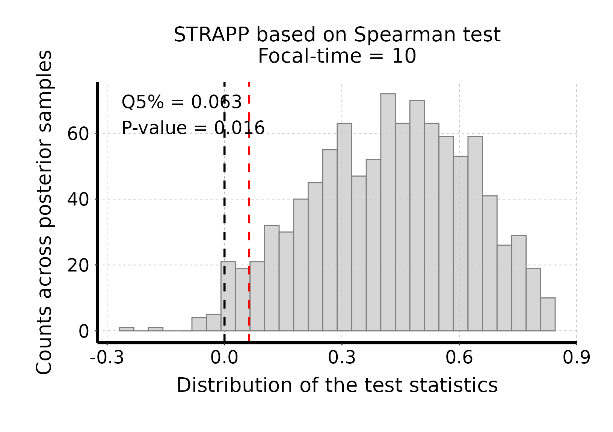
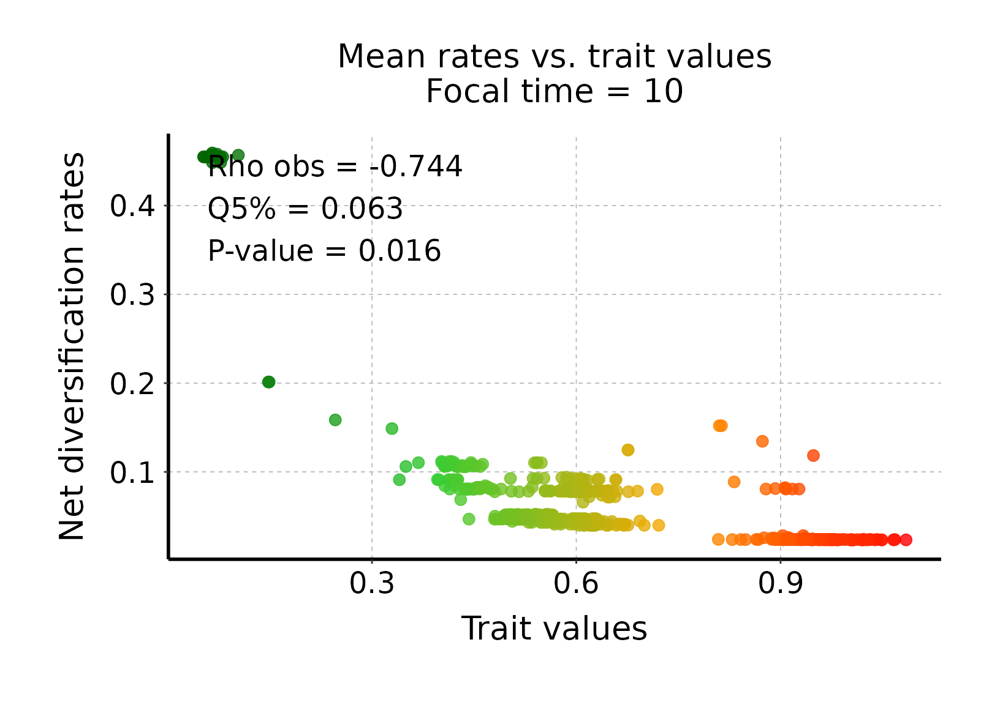
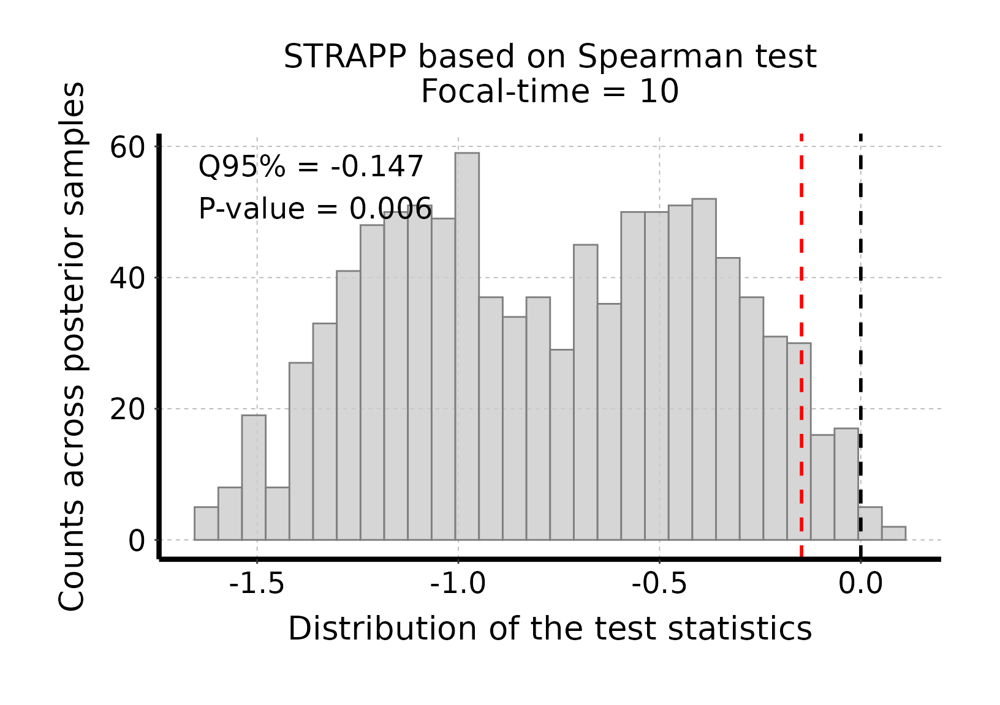
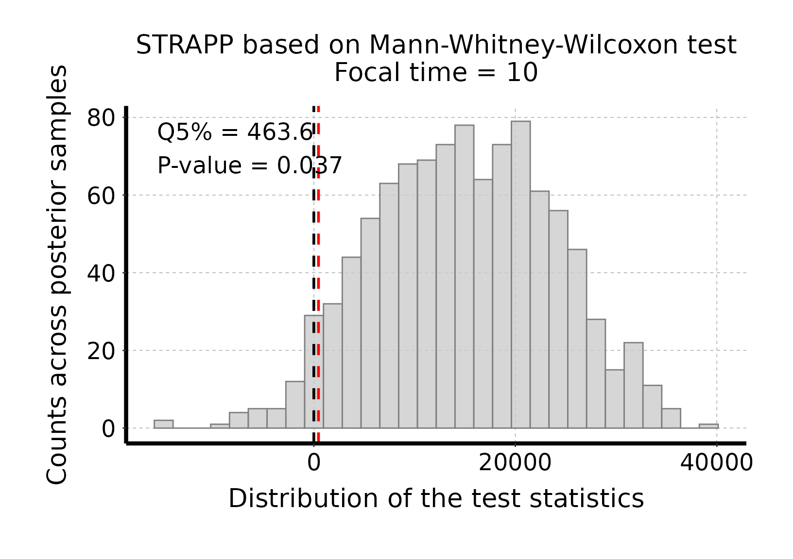
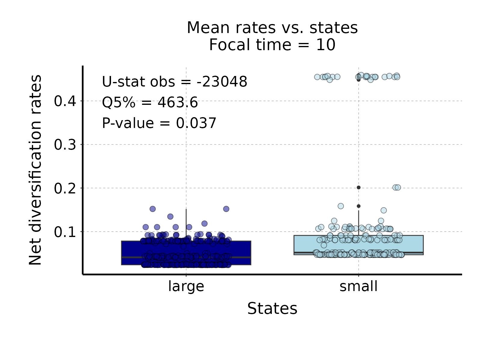
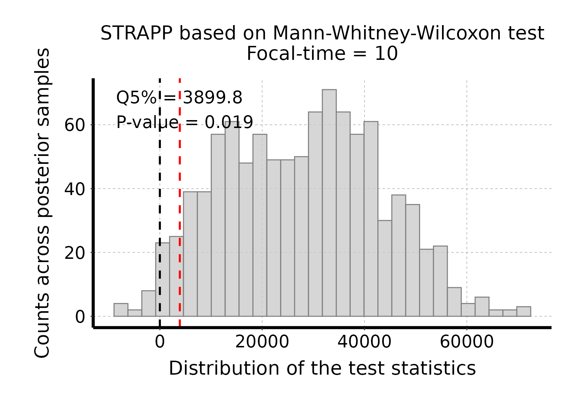
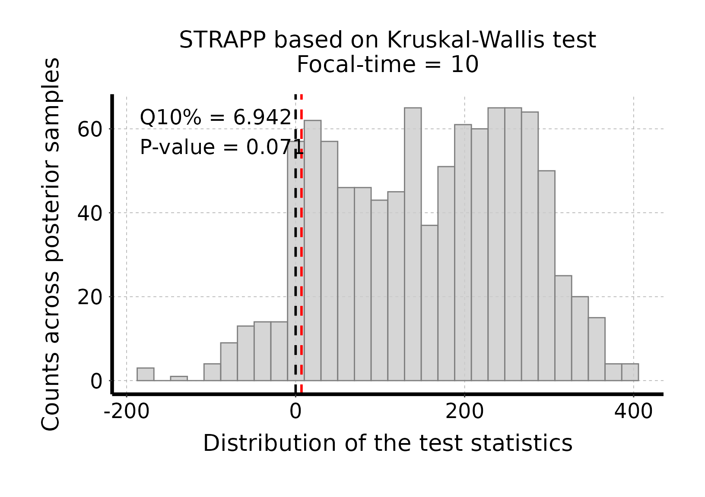
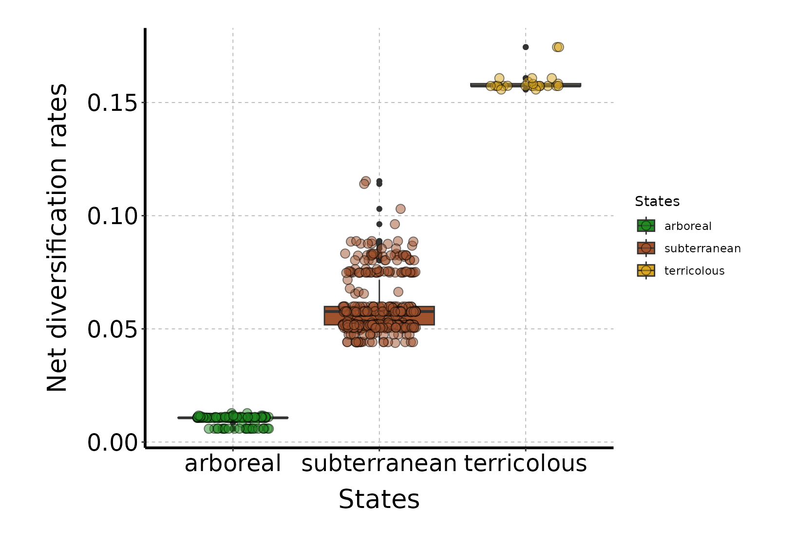
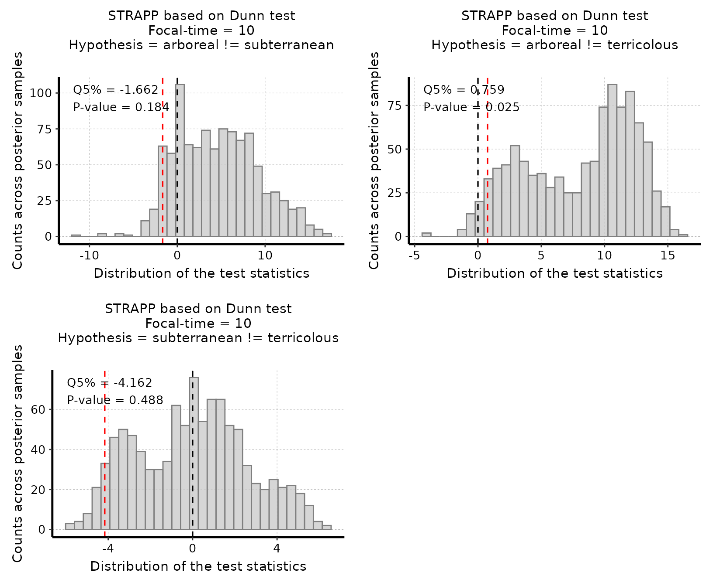
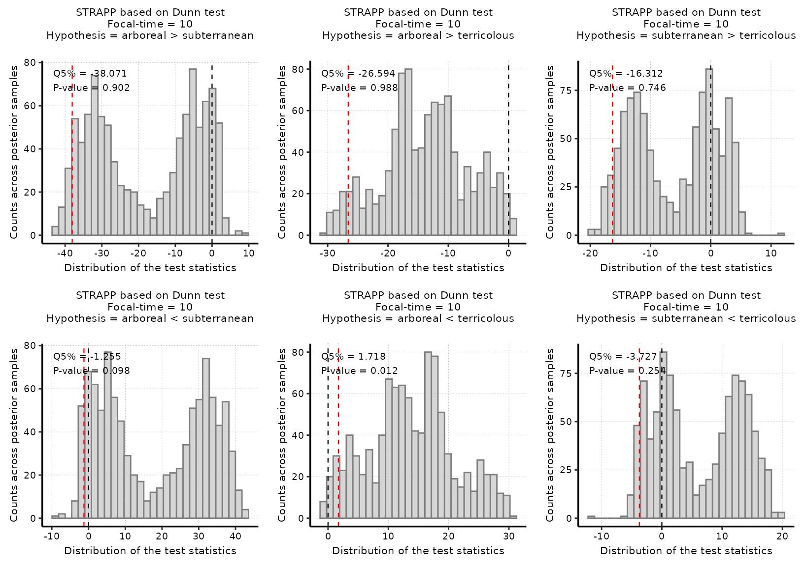

Explore STRAPP test options
Source:vignettes/explore_STRAPP_test_types.Rmd
explore_STRAPP_test_types.Rmd
This vignette presents the different types of STRAPP
tests that can be carried on with deepSTRAPP across the
different types of data (i.e., continuous, binary, and
multinominal).
Two-tailed tests make no assumption on the direction of the
effect tested.
One-tailed tests make an hypothesis on the direction of the effect tested.
- For continuous data, the direction of the correlation is either “positive” or “negative”.
- For binary data, the rate difference between state A and state B can be either “A > B” or “B > A”.
- For multinominal data, overall Kruskal-Wallis tests are one-tailed by definition. They test for a rate difference across all states/ranges at once.
- Post hoc pairwise Dunn’s tests carried out between pairs of states/ranges can be one-tailed or two-tailed, with all configuration tested by default.
Please note that the trait data and phylogeny calibration used
in these examples are NOT valid biological data. They
were modified in order to provide results illustrating the usefulness of
deepSTRAPP.
# ------ Example 1: Continuous trait data ------ #
#### Step 1: Prepare data ####
## Load phylogeny with old time-calibration
data("Ponerinae_tree_old_calib", package = "deepSTRAPP")
## Load trait df
data("Ponerinae_trait_tip_data", package = "deepSTRAPP")
# Extract continuous trait data as a named vector
Ponerinae_cont_tip_data <- setNames(object = Ponerinae_trait_tip_data$fake_cont_tip_data,
nm = Ponerinae_trait_tip_data$Taxa)
# Reorder tip data as in phylogeny
Ponerinae_cont_tip_data <- Ponerinae_cont_tip_data[Ponerinae_tree_old_calib$tip.label]
# Run prepare_trait_data with default options
# For continuous trait, a BM model is assumed by default.
Ponerinae_trait_object <- prepare_trait_data(tip_data = Ponerinae_cont_tip_data,
trait_data_type = "continuous",
phylo = Ponerinae_tree_old_calib,
evolutionary_model = "BM",
seed = 1234) # Set seed for reproducibility
#### Step 2: Run a two-tailed test ####
# No assumption is made on the direction of the effect tested.
# The null hypothesis is that no correlation can be found between rates and trait values.
# The alternative hypothesis is that there is a correlation between rates and trait values,
# in any direction (i.e., "positive" or "negative").
# Here, we run a two-tailed STRAPP test for t = 10 Mya.
focal_time <- 10
deepSTRAPP_output_two_tailed <- run_deepSTRAPP_for_focal_time(
contMap = Ponerinae_trait_object$contMap,
ace = Ponerinae_trait_object$ace,
tip_data = Ponerinae_cont_tip_data,
trait_data_type = "continuous",
BAMM_object = Ponerinae_BAMM_object_old_calib,
focal_time = focal_time,
two_tailed = TRUE, # Select a two-tailed test (Default)
rate_type = "net_diversification",
seed = 1234, # Set seed for reproducibility
return_perm_data = TRUE, # Keep permutation data to be able to plot histograms of tests
# Needed to access traits and rates data to evaluate the direction of the correlation
extract_diversification_data_melted_df = TRUE,
return_updated_trait_data_with_Map = TRUE)
## Explore output
str(deepSTRAPP_output_two_tailed, max.level = 1)
# Access deepSTRAPP results
deepSTRAPP_output_two_tailed$STRAPP_results[1:5]
# We obtain a p-value = 0.016 leading us to discard the null hypothesis (no correlation).
# The estimate is the quantile 5% of the distribution of differences in
# absolute Spearman rho-stats between observed and permuted data.
# The test is significant as the estimate is higher than zero.
# However, without plotting the rates vs. trait data, we do not know the direction of this correlation.
# Plot histogram of Spearman sum-rank test stats
plot_histogram_STRAPP_test_for_focal_time(
deepSTRAPP_outputs = deepSTRAPP_output_two_tailed)
# The test is significant as the red line (quantile 5% = 0.063) is above the null expectation
# that Δ abs(Spearman rho-stats) = 0.#> Selected two-tailed Spearman's rank correlation test:
#>
#> Null hypothesis: no correlation between trait data and diversification rates.
#>
#> Alternative hypothesis: negative or positive correlation between trait data diversification rates.
#>
#> 'Estimate' stats is the 5% quantile of differences in absolute rho-stats between observed and permuted data.
#> Null hypothesis is rejected if 'estimate' is higher than zero / p-value lower than 0.05.
## Plot rates vs. trait values
# Extract mean diversification data, only for net diversification rates
diversification_data_df <- deepSTRAPP_output_two_tailed$diversification_data_df |>
dplyr::filter(rate_type == "net_diversification") |>
dplyr::group_by(tip_ID) |>
dplyr::summarize(mean_rates = mean(rates))
# Extract trait data
trait_data_df <- as.data.frame(deepSTRAPP_output_two_tailed$updated_trait_data_with_Map$trait_data)
trait_data_df$tip_ID <- names(deepSTRAPP_output_two_tailed$updated_trait_data_with_Map$trait_data)
names(trait_data_df) <- c("trait_values", "tip_ID")
# Merge rates and traits in a unique data.frame
data_melted_df <- dplyr::left_join(x = diversification_data_df, y = trait_data_df,
by = dplyr::join_by(tip_ID))
# Plot rates vs. trait values across all BAMM samples
ggplot_rates_vs_traits <- ggplot2::ggplot(data = data_melted_df) +
# Plot points for all samples
ggplot2::geom_point(mapping = ggplot2::aes(y = mean_rates, x = trait_values),
alpha = 0.80, size = 3) +
# Adjust axis titles
ggplot2::ylab("Net diversification rates") +
ggplot2::xlab("Trait values") +
# Adjust aesthetics
ggplot2::theme(
plot.margin = ggplot2::margin(0.3, 0.5, 0.5, 0.5, "inches"), # trbl
panel.grid.major = ggplot2::element_line(color = "grey70", linetype = "dashed", linewidth = 0.3),
panel.background = ggplot2::element_rect(fill = NA, color = NA),
axis.title = ggplot2::element_text(size = 20, color = "black"),
axis.title.x = ggplot2::element_text(margin = ggplot2::margin(t = 10)),
axis.title.y = ggplot2::element_text(margin = ggplot2::margin(r = 12)),
axis.line = ggplot2::element_line(linewidth = 1.0),
axis.text = ggplot2::element_text(size = 18, color = "black"))
print(ggplot_rates_vs_traits)
# The plot indicates that rates are globally negatively correlated with trait values.
# We could also have directly tested for hypothesis with a one-tailed test (See Step 3 below).
#### Step 3: Run a one-tailed test ####
# Here, we make an assumption on the direction of the effect tested.
# The null hypothesis is that there is a positive or no correlation between rates and trait values.
# The alternative hypothesis is that there is a negative correlation between rates and trait values.
# We run a one-tailed STRAPP test for t = 10 Mya.
focal_time <- 10
deepSTRAPP_output_one_tailed <- run_deepSTRAPP_for_focal_time(
contMap = Ponerinae_trait_object$contMap,
ace = Ponerinae_trait_object$ace,
tip_data = Ponerinae_cont_tip_data,
trait_data_type = "continuous",
BAMM_object = Ponerinae_BAMM_object_old_calib,
focal_time = focal_time,
two_tailed = FALSE, # Select a one-tailed test
one_tailed_hypothesis = "negative", # We select a "negative" correlation as the alternative hypothesis
rate_type = "net_diversification",
seed = 1234, # Set seed for reproducibility
return_perm_data = TRUE) # Keep permutation data to be able to plot histograms of tests
## Explore output
str(deepSTRAPP_output_one_tailed, max.level = 1)
# Access deepSTRAPP results
deepSTRAPP_output_one_tailed$STRAPP_results[1:5]
# We obtain a p-value = 0.006 leading us to discard the null hypothesis
# (no correlation or positive correlation).
# Thus, the alternative hypothesis (negative correlation) is supported by the test.
# The estimate is the quantile 95% of the distribution of differences in Spearman rho-stats
# between observed and permuted data.
# The test is significant as the estimate is lower than zero.
# Plot histogram of Spearman sum-rank test stats
plot_histogram_STRAPP_test_for_focal_time(
deepSTRAPP_outputs = deepSTRAPP_output_one_tailed)
# The test is significant as the red line (quantile 95% = -0.147) is below the null expectation
# that Δ Spearman rho stat = 0.#> Selected one-tailed negative Spearman's rank correlation test:
#>
#> Null hypothesis: positive or no correlation between trait data and diversification rates.
#>
#> Alternative hypothesis: negative correlation between trait data diversification rates.
#> Low trait values associated with high diversification rates, and conversely.
#>
#> 'Estimate' stats is the 95% quantile of rho differences between observed and permuted data.
#> Null hypothesis is rejected if 'estimate' is lower than zero / p-value lower than 0.05.
# ------ Example 2: Categorical binary trait data ------ #
#### Step 1: Prepare data ####
## Load phylogeny with old time-calibration
data("Ponerinae_tree_old_calib", package = "deepSTRAPP")
## Load trait df
data("Ponerinae_trait_tip_data", package = "deepSTRAPP")
# Extract continuous trait data as a named vector
Ponerinae_cat_2lvl_tip_data <- setNames(object = Ponerinae_trait_tip_data$fake_cat_2lvl_tip_data,
nm = Ponerinae_trait_tip_data$Taxa)
# Reorder tip data as in phylogeny
Ponerinae_cat_2lvl_tip_data <- Ponerinae_cat_2lvl_tip_data[Ponerinae_tree_old_calib$tip.label]
# Select color scheme for states
colors_per_states <- c("darkblue", "lightblue")
names(colors_per_states) <- c("large", "small")
# Run prepare_trait_data with default options
Ponerinae_trait_object <- prepare_trait_data(tip_data = Ponerinae_cat_2lvl_tip_data,
trait_data_type = "categorical",
phylo = Ponerinae_tree_old_calib,
evolutionary_model = "ARD", # Select an Equal-Rates model
colors_per_states = colors_per_states,
nb_simulations = 100,
seed = 1234) # Set seed for reproducibility
# Load directly output to save time
data(Ponerinae_cat_2lvl_data_old_calib, package = "deepSTRAPP")
Ponerinae_trait_object <- Ponerinae_cat_2lvl_data_old_calib
#### Step 2: Run a two-tailed test ####
# No assumption is made ab out which states exhibit the highest rates.
# The null hypothesis is that there is no difference in rates between the two states.
# The alternative hypothesis is that there is a difference in rates between the two states,
# in any direction (i.e., "small > large" or "large > small").
# Here, we run a two-tailed STRAPP test for t = 10 Mya.
focal_time <- 10
deepSTRAPP_output_two_tailed <- run_deepSTRAPP_for_focal_time(
densityMaps = Ponerinae_trait_object$densityMaps,
ace = Ponerinae_trait_object$ace,
tip_data = Ponerinae_cat_2lvl_tip_data,
trait_data_type = "categorical",
BAMM_object = Ponerinae_BAMM_object_old_calib,
focal_time = focal_time,
two_tailed = TRUE, # Select a two-tailed test (Default)
rate_type = "net_diversification",
seed = 1234, # Set seed for reproducibility
return_perm_data = TRUE, # Keep permutation data to be able to plot histograms of tests
# Needed to access traits and rates data to evaluate the direction of the correlation
extract_diversification_data_melted_df = TRUE,
return_updated_trait_data_with_Map = TRUE)
## Explore output
str(deepSTRAPP_output_two_tailed, max.level = 1)
# Access deepSTRAPP results
deepSTRAPP_output_two_tailed$STRAPP_results[1:5]
# We obtain a p-value = 0.037 leading us to discard the null hypothesis (no differences).
# The estimate is the quantile 5% of the distribution of differences
# in absolute Mann-Whitney-Wilcoxon U-stats between observed and permuted data.
# The test is significant as the estimate is higher than zero.
# However, without plotting the rates vs. states, we do not know the direction of this difference.
# Plot histogram of Mann-Whitney-Wilcoxon test stats
plot_histogram_STRAPP_test_for_focal_time(
deepSTRAPP_outputs = deepSTRAPP_output_two_tailed)
# The test is significant as the red line (quantile 5% = 463.6) is above the null expectation
# that Δ abs(Mann-Whitney-Wilcoxon U-stats) = 0.#> Selected two-tailed Mann-Whitney-Wilcoxon rank-sum test:
#>
#> Null hypothesis: taxa with state/range 'large' have equal net_diversification rates than those with state/range 'small'.
#> Alternative hypothesis: taxa with state/range 'large' have higher or lower net_diversification rates than those with state/range 'small'.
#>
#> 'Estimate' stats is the 5% quantile of differences in absolute U-stats between observed and permuted data.
#> Null hypothesis is rejected if 'estimate' is higher than zero / p-value lower than 0.05.
## Plot rates vs. trait values
# Extract mean diversification data, only for net diversification rates
diversification_data_df <- deepSTRAPP_output_two_tailed$diversification_data_df |>
dplyr::filter(rate_type == "net_diversification") |>
dplyr::group_by(tip_ID) |>
dplyr::summarize(mean_rates = mean(rates))
# Extract trait data
trait_data_df <- as.data.frame(deepSTRAPP_output_two_tailed$updated_trait_data_with_Map$trait_data)
trait_data_df$tip_ID <- names(deepSTRAPP_output_two_tailed$updated_trait_data_with_Map$trait_data)
names(trait_data_df) <- c("trait_values", "tip_ID")
# Merge rates and traits in a unique data.frame
data_melted_df <- dplyr::left_join(x = diversification_data_df, y = trait_data_df,
by = dplyr::join_by(tip_ID))
# Plot rates vs. trait values across all BAMM samples
ggplot_rates_vs_traits <- ggplot2::ggplot(data = data_melted_df) +
# Plot boxplot per states
ggplot2::geom_boxplot(mapping = ggplot2::aes(y = mean_rates, x = trait_values,
fill = trait_values)) +
# Plot points for all samples
ggplot2::geom_jitter(mapping = ggplot2::aes(y = mean_rates, x = trait_values,
fill = trait_values),
alpha = 0.50, size = 3, width = 0.25, shape = 21, color = "black") +
# Adjust axis titles
ggplot2::ylab("Net diversification rates") +
ggplot2::xlab("States") +
# Adjust legend
ggplot2::scale_fill_manual(name = "States",
breaks = names(colors_per_states),
values = colors_per_states) +
# Adjust aesthetics
ggplot2::theme(
plot.margin = ggplot2::margin(0.3, 0.5, 0.5, 0.5, "inches"), # trbl
panel.grid.major = ggplot2::element_line(color = "grey70", linetype = "dashed", linewidth = 0.3),
panel.background = ggplot2::element_rect(fill = NA, color = NA),
axis.title = ggplot2::element_text(size = 20, color = "black"),
axis.title.x = ggplot2::element_text(margin = ggplot2::margin(t = 10)),
axis.title.y = ggplot2::element_text(margin = ggplot2::margin(r = 12)),
axis.line = ggplot2::element_line(linewidth = 1.0),
axis.text = ggplot2::element_text(size = 18, color = "black"))
print(ggplot_rates_vs_traits)
# The plot indicates that net diversification rates are higher in "small" ants than in "large" ants.
# We could also have directly tested for hypothesis with a one-tailed test (See Step 3 below).

#### Step 3: Run a one-tailed test ####
# Here, we make an assumption on the direction of the effect tested.
# The null hypothesis is that diversification rates are lower or equal
# for "small" ants compared to "large" ants.
# The alternative hypothesis is that diversification rates are higher
# for "small" ants than "large" ants.
# We run a one-tailed STRAPP test for t = 10 Mya.
focal_time <- 10
deepSTRAPP_output_one_tailed <- run_deepSTRAPP_for_focal_time(
densityMaps = Ponerinae_trait_object$densityMaps,
ace = Ponerinae_trait_object$ace,
tip_data = Ponerinae_cat_2lvl_tip_data,
trait_data_type = "categorical",
BAMM_object = Ponerinae_BAMM_object_old_calib,
focal_time = focal_time,
two_tailed = FALSE, # Select a one-tailed test
one_tailed_hypothesis = "small > large", # We select "small > large" as the alternative hypothesis
rate_type = "net_diversification",
seed = 1234, # Set seed for reproducibility
return_perm_data = TRUE) # Keep permutation data to be able to plot histograms of tests
## Explore output
str(deepSTRAPP_output_one_tailed, max.level = 1)
# Access deepSTRAPP results
deepSTRAPP_output_one_tailed$STRAPP_results[1:5]
# We obtain a p-value = 0.019 leading us to discard the null hypothesis ("small <= large").
# Thus, the alternative hypothesis ("small > large") is supported by the test.
# The estimate is the quantile 5% of the distribution of differences in Mann-Whitney-Wilcoxon U-stats
# between observed and permuted data
# The test is significant as the estimate is higher than zero.
# Plot histogram of Mann-Whitney-Wilcoxon test stats
plot_histogram_STRAPP_test_for_focal_time(
deepSTRAPP_outputs = deepSTRAPP_output_one_tailed)
# The test is significant as the red line (quantile 5% = 3899.8) is above the null expectation
# that Δ Mann-Whitney-Wilcoxon U-stats = 0.#> Selected one-tailed Mann-Whitney-Wilcoxon rank-sum test:
#>
#> Null hypothesis: taxa with state/range 'small' have lower or equal net_diversification rates than those with state/range 'large'.
#> Alternative hypothesis: taxa with state/range 'small' have higher net_diversification rates than those with state/range 'large'.
#>
#> 'Estimate' stats is the 5% quantile of differences in absolute U-stats between observed and permuted data.
#> Null hypothesis is rejected if 'estimate' is higher than zero / p-value lower than 0.05.
# ------ Example 3: Categorical multinominal (3-levels) trait data ------ #
#### Step 1: Prepare data ####
## Load phylogeny with old time-calibration
data("Ponerinae_tree_old_calib", package = "deepSTRAPP")
## Load trait df
data("Ponerinae_trait_tip_data", package = "deepSTRAPP")
# Extract continuous trait data as a named vector
Ponerinae_cat_3lvl_tip_data <- setNames(object = Ponerinae_trait_tip_data$fake_cat_3lvl_tip_data,
nm = Ponerinae_trait_tip_data$Taxa)
# Reorder tip data as in phylogeny
Ponerinae_cat_3lvl_tip_data <- Ponerinae_cat_3lvl_tip_data[Ponerinae_tree_old_calib$tip.label]
## Select color scheme for states
colors_per_states <- c("forestgreen", "sienna", "goldenrod")
names(colors_per_states) <- c("arboreal", "subterranean", "terricolous")
# Run prepare_trait_data with default options
Ponerinae_trait_object <- prepare_trait_data(tip_data = Ponerinae_cat_3lvl_tip_data,
trait_data_type = "categorical",
phylo = Ponerinae_tree_old_calib,
evolutionary_model = "ARD", # Select an Equal-Rates model
colors_per_states = colors_per_states,
nb_simulations = 100,
seed = 1234) # Set seed for reproducibility
# Load directly output to save time
data(Ponerinae_cat_3lvl_data_old_calib, package = "deepSTRAPP")
Ponerinae_trait_object <- Ponerinae_cat_3lvl_data_old_calib
#### Step 2: Run the overall Kruskal-Wallis test ####
# For multinominal data (i.e., with more than two states/ranges), the overall test
# is by definition a one-tailed Kruskal-Wallis test for rate differences across all states/ranges.
# There is no two-tailed version of this test, thus deepSTRAPP assumes a one-tailed test by default.
# The null hypothesis is that there is no difference in rates across all states/ranges.
# The alternative hypothesis is that there is at least one pairs of states/ranges
# with differences in diversification rates.
# To test for differences between pairs of states/ranges, you need to run post hoc pairwise tests.
# These Dunn's test can be one-tailed or two-tailed depending on the null hypotheses stated.
# See the next Steps 3 & 4 for post hoc pairwise tests.
# Here, we run an overall STRAPP test for t = 10 Mya.
focal_time <- 10
deepSTRAPP_output_overall <- run_deepSTRAPP_for_focal_time(
densityMaps = Ponerinae_trait_object$densityMaps,
ace = Ponerinae_trait_object$ace,
tip_data = Ponerinae_cat_3lvl_tip_data,
trait_data_type = "categorical",
BAMM_object = Ponerinae_BAMM_object_old_calib,
focal_time = focal_time,
alpha = 0.10, # Adjust the significance threshold
posthoc_pairwise_tests = FALSE, # To run the overall
rate_type = "net_diversification",
seed = 1234, # Set seed for reproducibility
return_perm_data = TRUE, # Keep permutation data to be able to plot histograms of tests
# Needed to access traits and rates data to evaluate the direction of the correlation
extract_diversification_data_melted_df = TRUE,
return_updated_trait_data_with_Map = TRUE)
## Explore output
str(deepSTRAPP_output_overall, max.level = 1)
# Access deepSTRAPP results
deepSTRAPP_output_overall$STRAPP_results[1:5]
# We obtain a p-value = 0.071 leading us to discard the null hypothesis (no differences).
# The estimate is the quantile 10% of the distribution of differences
# in Kruskal-Wallis H-stats between observed and permuted data.
# The test is significant as the estimate is higher than zero.
# However, without plotting the rates vs. states, or running post hoc pairwise tests,
# we do not know which pairs of states exhibit differences.
# Plot histogram of Kruskall-Wallis one-way ANOVA test stats
plot_histogram_STRAPP_test_for_focal_time(
deepSTRAPP_outputs = deepSTRAPP_output_overall)
# The test is significant as the red line (quantile 10% = 6.942) is above the null expectation
# that Δ Kruskal-Wallis H-stats = 0.#> Selected Kruskal-Wallis's one-way ANOVA on ranks test:
#>
#> Null hypothesis: taxa have equal net_diversification rates independent from states.
#> Alternative hypothesis: taxa have different net_diversification rates between states.
#>
#> 'Estimate' stats is the 10% quantile of differences in H-stats between observed and permuted data.
#> Null hypothesis is rejected if 'estimate' is higher than zero / p-value lower than 0.1.
## Plot rates vs. trait values
# Extract mean diversification data, only for net diversification rates
diversification_data_df <- deepSTRAPP_output_overall$diversification_data_df |>
dplyr::filter(rate_type == "net_diversification") |>
dplyr::group_by(tip_ID) |>
dplyr::summarize(mean_rates = mean(rates))
# Extract trait data
trait_data_df <- as.data.frame(deepSTRAPP_output_overall$updated_trait_data_with_Map$trait_data)
trait_data_df$tip_ID <- names(deepSTRAPP_output_overall$updated_trait_data_with_Map$trait_data)
names(trait_data_df) <- c("trait_values", "tip_ID")
# Merge rates and traits in a unique data.frame
data_melted_df <- dplyr::left_join(x = diversification_data_df, y = trait_data_df,
by = dplyr::join_by(tip_ID))
# Plot rates vs. trait values across all BAMM samples
ggplot_rates_vs_traits <- ggplot2::ggplot(data = data_melted_df) +
# Plot boxplot per states
ggplot2::geom_boxplot(mapping = ggplot2::aes(y = mean_rates, x = trait_values,
fill = trait_values)) +
# Plot points for all samples
ggplot2::geom_jitter(mapping = ggplot2::aes(y = mean_rates, x = trait_values,
fill = trait_values),
alpha = 0.50, size = 3, width = 0.25, shape = 21, color = "black") +
# Adjust axis titles
ggplot2::ylab("Net diversification rates") +
ggplot2::xlab("States") +
# Adjust legend
ggplot2::scale_fill_manual(name = "States", breaks = names(colors_per_states), values = colors_per_states) +
# Adjust aesthetics
ggplot2::theme(
plot.margin = ggplot2::margin(0.3, 0.5, 0.5, 0.5, "inches"), # trbl
panel.grid.major = ggplot2::element_line(color = "grey70", linetype = "dashed", linewidth = 0.3),
panel.background = ggplot2::element_rect(fill = NA, color = NA),
axis.title = ggplot2::element_text(size = 20, color = "black"),
axis.title.x = ggplot2::element_text(margin = ggplot2::margin(t = 10)),
axis.title.y = ggplot2::element_text(margin = ggplot2::margin(r = 12)),
axis.line = ggplot2::element_line(linewidth = 1.0),
axis.text = ggplot2::element_text(size = 18, color = "black"))
print(ggplot_rates_vs_traits)
# The plot indicates that net diversification rates are higher in "terricolous" ants,
# then "subterranean" ants, and lower in "arboreal" ants.
# We can explore those potential differences with post hoc pairwise tests,
# with both one-tailed hypothesis tests or two-tailed tests (See Steps 3 & 4 below).

#### Step 3: Run all post hoc Dunn's two-tailed tests ####
# Post hoc tests are pairwise tests for differences between pairs of states/ranges.
# They can be two-tailed, without assumption regarding which states exhibit higher rates than the others.
# or they can be one-tailed, with assumption on which states exhibit higher rates within each pair.
# deepSTRAPP runs post hoc pairwise tests across all pairs of states.
# You can choose which type of tests (i.e., "two-tailed" or "one-tailed") to run.
# Here, the two-tailed version is presented. See Step 4 for the one-tailed version.
# In the two-tailed tests, the null hypothesis for each pair is that there is
# no difference in rates between the two states.
# The alternative hypothesis is that there is a difference in rates between the two states,
# in any direction (e.g., "arboreal > terricolous" or "terricolous > arboreal").
# You can also select a method to adjust p-values for multiple testing.
# See stats::p.adjust() for the available methods.
# Here, we select none.
# We run a two-tailed STRAPP test for t = 10 Mya.
focal_time <- 10
deepSTRAPP_output_two_tailed <- run_deepSTRAPP_for_focal_time(
densityMaps = Ponerinae_trait_object$densityMaps,
ace = Ponerinae_trait_object$ace,
tip_data = Ponerinae_cat_3lvl_tip_data,
trait_data_type = "categorical",
BAMM_object = Ponerinae_BAMM_object_old_calib,
focal_time = focal_time,
two_tailed = TRUE, # Select two-tailed tests for the post hoc tests (Default)
posthoc_pairwise_tests = TRUE, # Ask for post hoc tests to be carried out
rate_type = "net_diversification",
seed = 1234, # Set seed for reproducibility
return_perm_data = TRUE) # Keep permutation data to be able to plot histograms of tests
## Explore output
str(deepSTRAPP_output_two_tailed, max.level = 2)
# Access deepSTRAPP results for post hoc tests
deepSTRAPP_output_two_tailed$STRAPP_results$posthoc_pairwise_tests$summary_df
# We obtain a p-value for each pair of states. Here there are 3 possible pairs.
# Only the pair "arboreal != terricolous" yields to a significant result.
# For this pair, we obtain a p-value = 0.025 leading us to discard the null hypothesis (no differences).
# The estimate is the quantile 5% of the distribution of differences
# in absolute Dunn's Z-stats between observed and permuted data.
# The test is significant as the estimate is higher than zero (Q5% = 0.759).
# However, without plotting the rates vs. states, we would have not know the direction of this difference.
# Plot histogram of all post hoc two-tailed test stats
plot_histogram_STRAPP_test_for_focal_time(
deepSTRAPP_outputs = deepSTRAPP_output_two_tailed,
plot_posthoc_tests = TRUE)
# Only the test for the pair "arboreal =! terricolous" is significant as the red line
# (quantile 5% = 0.759) is above the null expectation that Δ Dunn's Z-stats = 0.
# The conclusion is that it is the difference in rates between "arboreal" ants
# and "terricolous" ants that drives the differences in rates recorded overall
# with the Kruskal-Wallis test.
# Yet, with this test only, we do not know which states has the higher rates
# We can look at the plot of rates vs. states above (See Step 2),
# but we can also test directly for the two hypotheses (i.e., ("arboreal" > "terricolous")
# or ("terricolous" > "arboreal") using one-tailed tests.
# See Step 4 below for the one-tailed tests.#> Selected Kruskal-Wallis's one-way ANOVA on ranks test:
#>
#> Null hypothesis: taxa have equal net_diversification rates independent from states.
#> Alternative hypothesis: taxa have different net_diversification rates between states.
#>
#> 'Estimate' stats is the 5% quantile of differences in H-stats between observed and permuted data.
#> Null hypothesis is rejected if 'estimate' is higher than zero / p-value lower than 0.05.
#>
#> # --------- Post hoc pairwise tests --------- #
#>
#> Selected two-tailed Dunn's post hoc pairwise rank-sum test:
#> Tests will be ran across all possible unique pairs of states.
#>
#> Null hypothesis: taxa have equal net_diversification rates independent from states.
#> Alternative hypothesis: taxa have different net_diversification rates between states.
#>
#> 'Estimate' stats is the 5% quantile of absolute differences in Z-stats between observed and permuted data.
#> Null hypothesis is rejected if 'estimate' is higher than zero / p-value lower than 0.05.
#### Step 4: Run all post hoc Dunn's one-tailed tests ####
# Here, we make assumptions on the direction of the effects tested.
# We conduct all possible one-tailed tests across pairs of states.
# Thus, for three pairs, we conduct six tests, one for each possible alternative hypothesis
# (i.e., "A" > "B" and "B" > "A").
# We run a one-tailed STRAPP test for t = 10 Mya.
focal_time <- 10
deepSTRAPP_output_one_tailed <- run_deepSTRAPP_for_focal_time(
densityMaps = Ponerinae_trait_object$densityMaps,
ace = Ponerinae_trait_object$ace,
tip_data = Ponerinae_cat_3lvl_tip_data,
trait_data_type = "categorical",
BAMM_object = Ponerinae_BAMM_object_old_calib,
focal_time = focal_time,
two_tailed = FALSE, # Select one-tailed tests for the post hoc tests
posthoc_pairwise_tests = TRUE, # Ask for post hoc tests to be carried out
rate_type = "net_diversification",
seed = 1234, # Set seed for reproducibility
return_perm_data = TRUE) # Keep permutation data to be able to plot histograms of tests
## Explore output
str(deepSTRAPP_output_one_tailed, max.level = 2)
# Access deepSTRAPP results for post hoc tests
deepSTRAPP_output_one_tailed$STRAPP_results$posthoc_pairwise_tests$summary_df
# We obtain a p-value for each pair of states in each direction.
# Here there are 3 possible pairs = 6 one-tailed tests.
# Only the alternative hypothesis "arboreal < terricolous" yields to a significant result.
# For this test, we obtain a p-value = 0.012 leading us to discard the null hypothesis that
# "arboreal" ants have equivalent or higher rates than "terricolous" ants.
# The estimate is the quantile 5% of the distribution of differences
# in Dunn's Z-stats between observed and permuted data.
# The test is significant as the estimate is higher than zero (Q5% = 1.718).
# We can conclude that our data support the idea that "arboreal" ants
# have lower diversification rates than "terricolous" ants.
# Plot histogram of all post hoc one-tailed test stats
plot_histogram_STRAPP_test_for_focal_time(
deepSTRAPP_outputs = deepSTRAPP_output_one_tailed,
plot_posthoc_tests = TRUE)
# Only the test for the alternative hypothesis "arboreal < terricolous" is significant as the red line
# (quantile 5% = 1.718) is above the null expectation that Δ Dunn's Z-stats = 0.
# The conclusion is that it is the higher rates in "terricolous" ants vs. lower rates in "arboreal" ants
# that drives the differences in rates recorded overall with the Kruskal-Wallis test.#> Selected Kruskal-Wallis's one-way ANOVA on ranks test:
#>
#> Null hypothesis: taxa have equal net_diversification rates independent from states.
#> Alternative hypothesis: taxa have different net_diversification rates between states.
#>
#> 'Estimate' stats is the 5% quantile of differences in H-stats between observed and permuted data.
#> Null hypothesis is rejected if 'estimate' is higher than zero / p-value lower than 0.05.
#>
#> # --------- Post hoc pairwise tests --------- #
#>
#> Selected one-tailed Dunn's post hoc pairwise rank-sum test:
#> Tests will be ran across all possible asymmetric pairs of states.
#>
#> Null hypothesis: taxa in the first state/range have lower or equal net_diversification rates than taxa in the second state/range in 'pairs'.
#> Alternative hypothesis: taxa in the first state/range have higher net_diversification rates than taxa in the second state/range in 'pairs'.
#>
#> 'Estimate' stats is the 5% quantile of differences in Z-stats between observed and permuted data.
#> Null hypothesis is rejected if 'estimate' is higher than zero / p-value lower than 0.05.